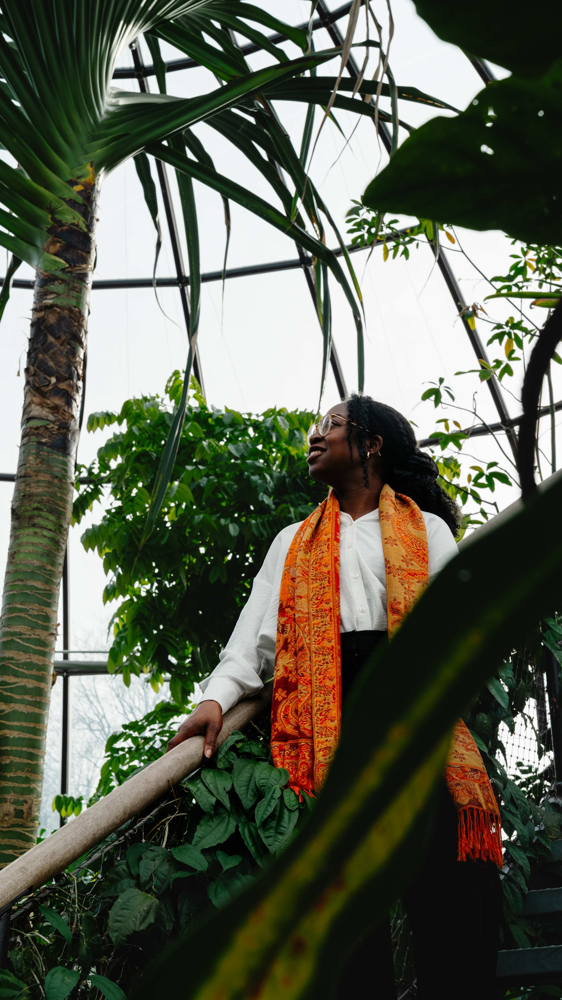
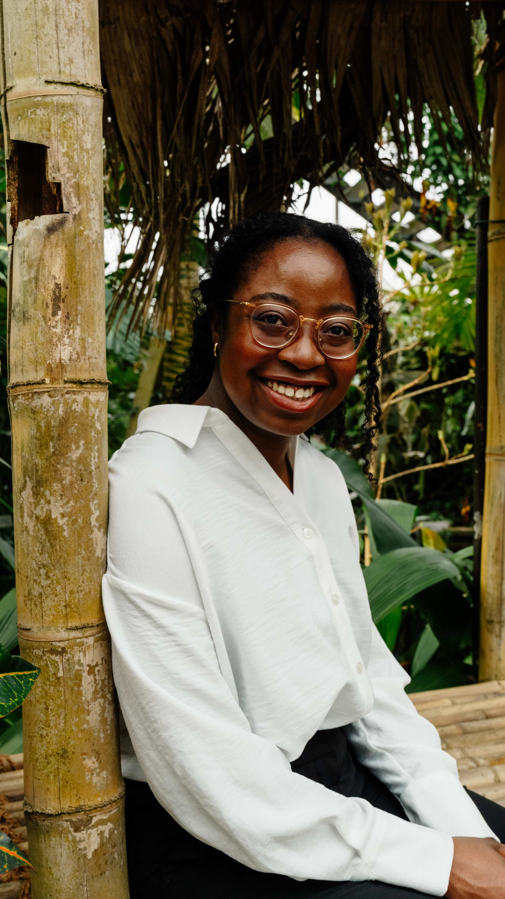
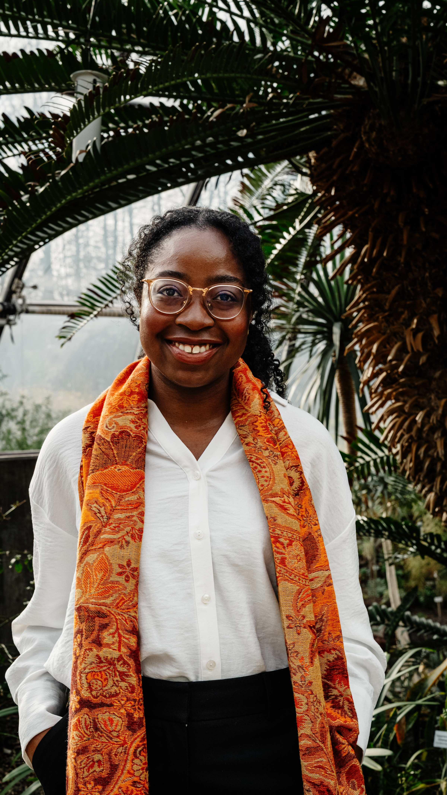
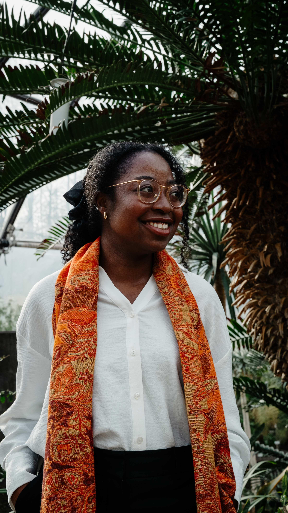
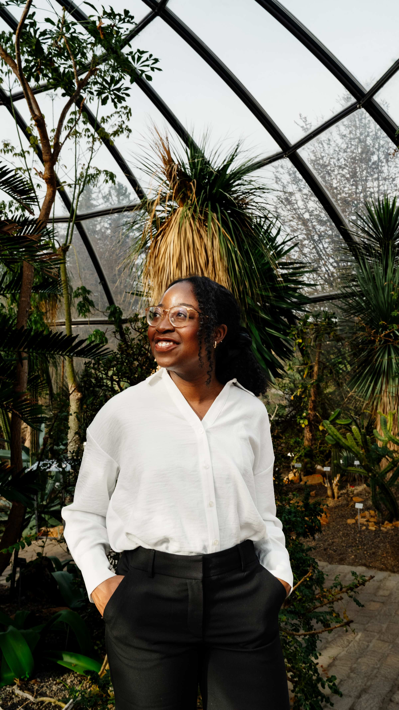
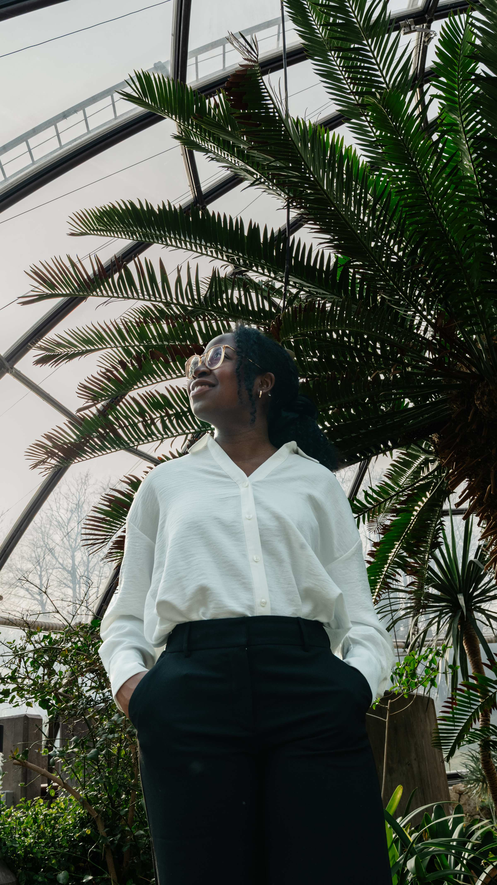
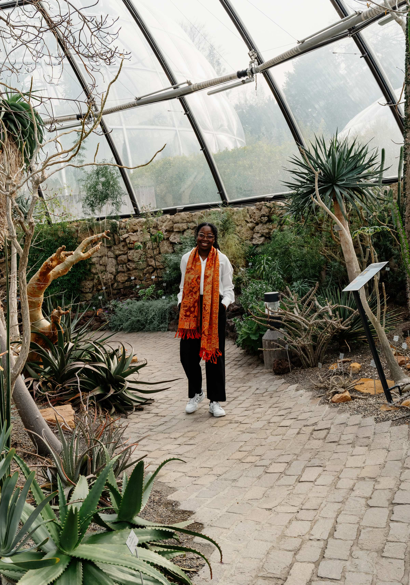
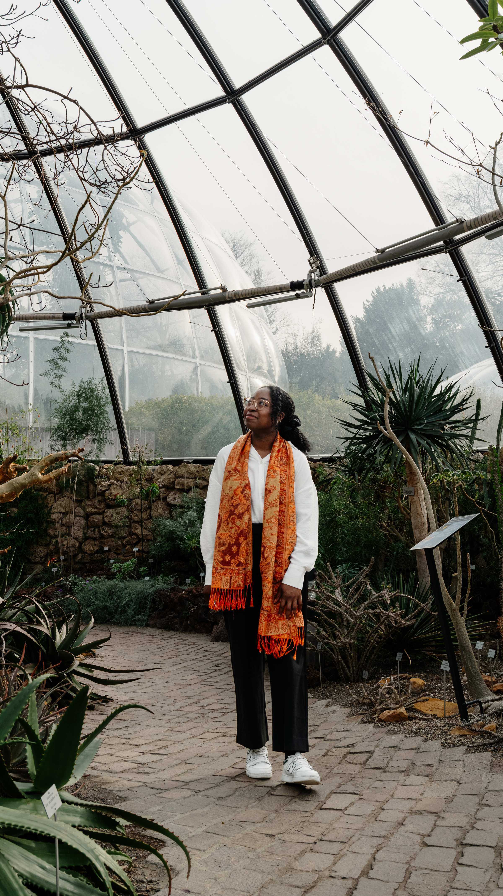
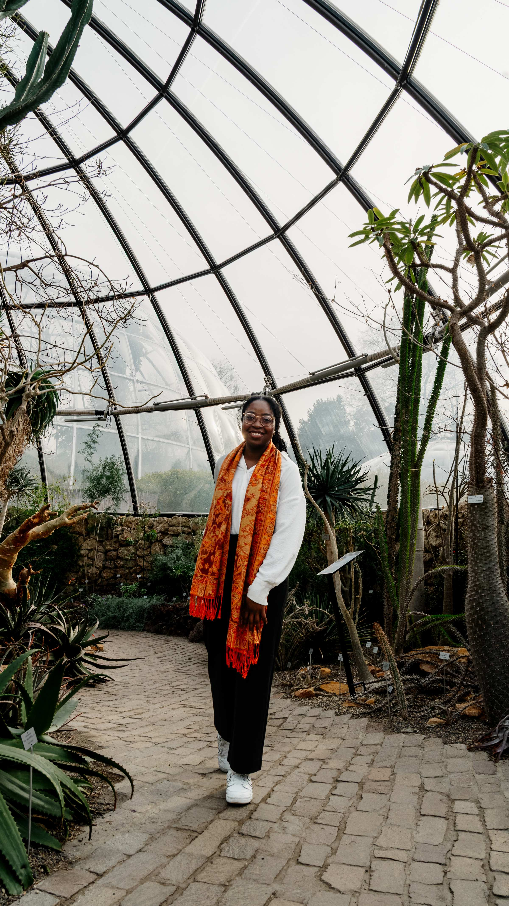

Annie wünschte sich neue Bilder für ihren CV – modern, authentisch und mit einem besonderen Touch. Gemeinsam überlegten wir, welche Umgebung zu ihr passt und in welcher Atmosphäre sie sich wohlfühlt. Schnell war klar: Die Pflanzenwelt ist genau ihr Element. Der Botanische Garten bot dafür die ideale Kulisse – natürliches Licht, vielseitige Hintergründe und eine ruhige, inspirierende Umgebung. So entstanden professionelle Aufnahmen, die Annies Persönlichkeit und Stil auf natürliche Weise unterstreichen und ihren Lebenslauf visuell aufwerten.
Interesse?
Hier zu deinem Fotoshooting






